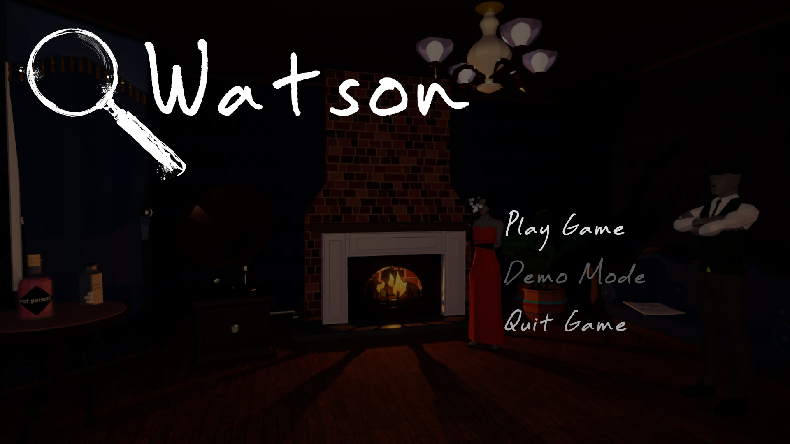
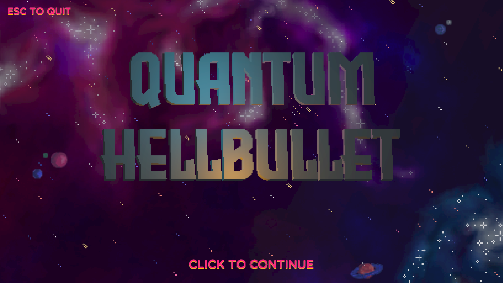
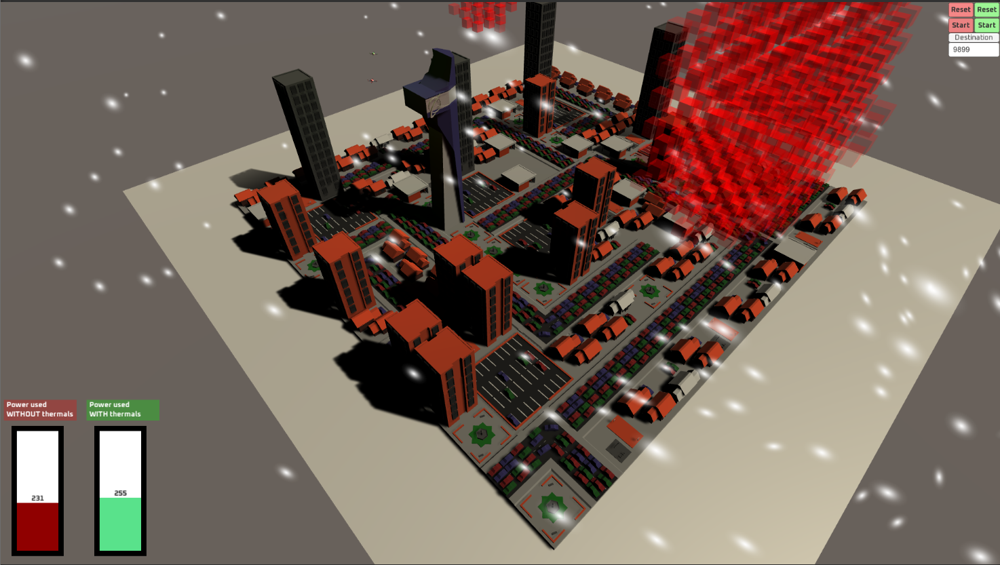

I graduated from the University of Bristol with First-Class Honours in MEng Computer Science .
My passion for games development fully flourished in my third
year during the year long games project module in I and six
other created the game "Watson". Since then I have competed in
a team gamejam and since graduating have begun making my own
games as can be seen below.
When I'm not working on game related projects, I enjoy 3D
printing and playing music, having played trombone in a
variety of ensambles. I also play Piano, Guitar and Drums
casually. Additionally, I enjoy playing video games, board
games and tabletop games as well as being creative with 3D
modelling and 3D printing an example of can be seen
on this thingiverse page.

A real time strategy game where you control a warband of cars
which travels across the wastes destroying enemy factions using the
rams and turrets fitted to the vehicle.
Created as an extension to a personal personal project involving the boids algorithm.
I implemented a boid algorithm
as a personal project (which can be found here)
and after seeing the implementation I though this could be used to steer a group of cars.
From this implementation, this game emerged.

A murder mystery game where you play as watson, a detective.
You must speak to the guests, which make use of Natural Language processing
allowing them to understand a wide variety of qestions, to gather information
and solve the case!
Completed as part of the University of Bristol "Games Project"
module as part of a team of 7. I was primarily in charge of character and scenery modeling,
animation and game logic programming. In addition to this I was primarily in charge of collecting
playtester feedback.

Quantum Hellbullet is an out of control twist on the classic bullet hell genre.
Play as the Quantum Hellbullet, a ship with no offensive or movement capabilities
which instead of weaving between projectiles you instead use the ships Quantum
spacetime manipulation tools to move the projectiles around you. See how long you
can survive.
Created by a team of 4 called "electrically challenged" in 48 hours
as part of the 2020 GMTK "out of control" GameJam.
During this I was project leader and additionally worked on gameplay logic and models for the game.

Hot-Pockets is a unity based weather simulation which enables more efficient
routing of autonomous air vehicles around a city. In the project the engine power
use of a drone which takes the shortest path and a drone which makes use of the
natural pheonomenas of ridge lift and thermal columns are monitored.
Hot pockets is a euphamism for thermal columns.
This is the phenomena of large areas of ground releasing heat throughout the day creating thermal updrafts.
These updrafts can be used by air vehicles to gain height efficiently. The simulation takes into account these hot objects and radiates heat
throughout the system. These objects give free lift to any vehicle inside them.
Wind is also simulated due to the phenomena known as ridge lift.
This allows the air vehicle to take advantage of wind blowing at large vertical structures such as skyscrapers.
Hot-Pockets was the winner of the University of Bristol's Computer Science Society's 24 hour "Urban Air Mobility" Hack-a-thon 2020.
I have created both a raycaster and rasteriser and as such have an understanding of the rendering process.
The raycaster utilises photon mapping to simulate indirect light bouncing throughout the scene as can be seen in the left image.
The image on the left shows an image of the rasterisers depth buffer, with brighter objects being closer.

I have created animations making use of Autodesk Maya.
These short videos can be found on the youtube channel.